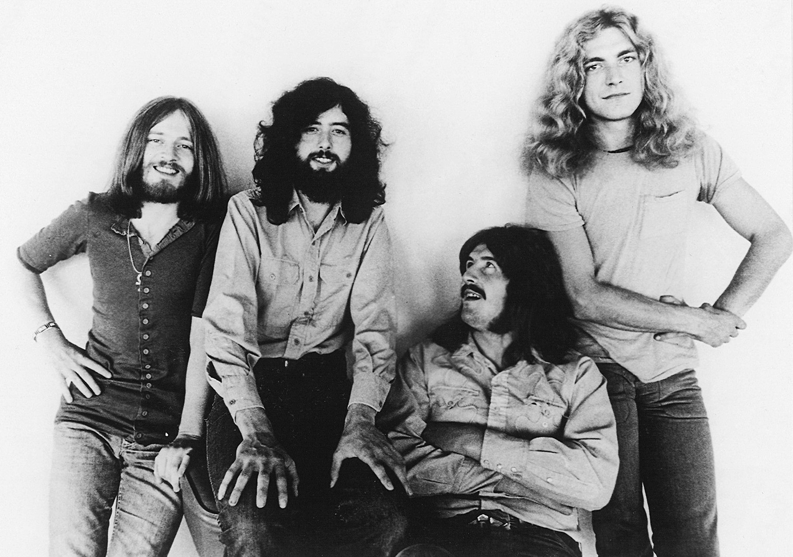
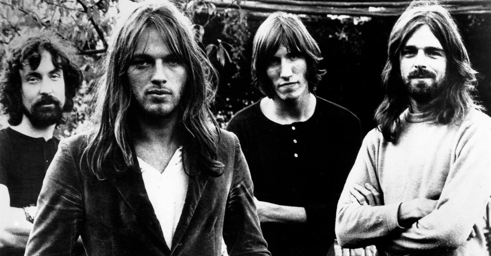
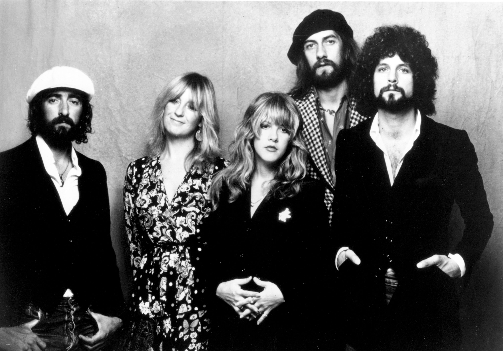

Historia do Rock and Rolll
Rock and roll nos anos 70
O rock dos anos 70 foi uma continuação da revolução musical iniciada na década de 1960, mas com uma série de transformações e inovações que ajudaram a definir o panorama musical da época. Se os anos 60 foram marcados pela explosão inicial do rock e pela mudança cultural, os anos 70 expandiram esses conceitos, dando origem a novos subgêneros e consolidando o rock como um dos estilos dominantes da música popular mundial. A década também foi uma época de maior profissionalismo, experimentação e diversidade sonora.
O conceito de rock clássico emergiu durante os anos 70, com bandas que se tornaram lendas, algumas já surgindo nos anos 60 e se solidificando na década seguinte, e outras estreando com grande impacto. Essas bandas criaram um som grandioso, de grandes produções, shows espetaculares e álbuns de impacto duradouro. Bandas como Led Zeppelin, Pink Floyd e Queen, são grandes exemplos do estilo.
Ainda tivemos o rock progressivo, que se consolidou como um dos subgêneros dominantes dos anos 70. Com sua ênfase em estruturas musicais complexas, longos arranjos e experimentação sonora, o rock progressivo se afastava do formato de canções curtas e simples que caracterizavam o rock tradicional. As maiores bandas do gênero são: Genesis, Yes, King Crimson e Emerson, Lake & Palmer.
O hard rock também ganhou popularidade nos anos 70, com guitarras distorcidas, riffs poderosos e letras mais ousadas e de atitude. Bandas como AC/DC, Deep Purple e Kiss se destacaram neste subgênero, criando músicas que continuam a ser a base do rock pesado até hoje.
Embora o punk rock tenha se tornado mais proeminente no final da década de 70, ele foi uma resposta direta ao rock progressivo, que, em muitos casos, haviam se tornado excessivamente grandiosos e elaborados. O punk trouxe de volta a simplicidade e a atitude de rebeldia, com letras diretas e músicas rápidas e cruamente gravadas. O Punk teve como seus maiores representantes: Ramones, The Clash e Sex Pistols.
Nos anos 70, o rock também começou a incorporar mais influências da música negra, principalmente do funk e do soul. Bandas como Sly and the Family Stone e George Clinton (com Parliament e Funkadelic) trouxeram a fusão de rock e funk, criando uma sonoridade mais dançante e ritmada. Além disso, o Rock passou a ser mais comercial, mesclando o Pop com o Rock, tendo como destaques: The Eagles, Fletwood Mac e Elton John.
